“AI, 나도 한번 써볼까?” 망설임에서 출발한 도전은 어느새 일하는 방식의 변화를 이끌어내는 실험이 되었다. AI 활용에 대해 막연한 궁금증을 품고 있던 사원들이 직접 도전장을 내밀었다. 2025년 네 번째 ‘오일 챌린저스’의 주인공이 된 5인의 KNOC인들은 ‘하루 한 번, AI 사용기’라는 주제로 5일간 특별한 프로젝트를 수행했다. 누군가는 업무의 효율을 높였고, 누군가는 새로운 아이디어를 떠올렸다. 짧지만 밀도 높았던 이 실험을 통해, 그들은 AI가 단지 ‘도구’가 아니라 ‘일의 방식을 바꾸는 계기’가 될 수 있음을 경험했다. 지금, 그들이 직접 써보고 남긴 AI 사용기를 들어보자.

국내사업개발처 국내개발전략팀
서광원 과장
1일차 – AI와 함께 만드는 나만의 업무 도구
이번 ‘오일 챌린저스’의 취지를 시작하며 가장 먼저 떠오른 생각은
‘어떻게 하면 업무를 더 효율적으로 할 수 있을까?’였습니다. 1일
차에는
AI를 이용하여 생산성 향상 웹프로그램을 만들어보았습니다.
젠스파크AI를 통해 업무 내용을 마크다운 포맷으로 작성할 수 있는
에디터, To-Do 리스트 관리 및 알람 프로그램, 업무 집중도를 높일
수 있는 시간 관리 프로그램(포모도로 타이머)을 만들며 몇 번의
오류가 있었지만 AI에게 물어보며 수정을 거쳤고 1~2시간 만에
멋진 웹프로그램을 만들 수 있었습니다.

2일차 – 모르는 분야, AI가 도와드립니다
올해 초부터 ChatGPT, Grok, Gemini 등에서 모두 심층 리서치
서비스를 시작했습니다. 리서치의 논리적 구성 측면에서는
ChatGPT가, 리서치의 방대함에 있어서는 Google 검색을 기반으로
하는 Gemini가 뛰어나지 않나 생각이 듭니다. 오늘은 Gemini를
이용해서 심층 리서치 기능을 이용해보았습니다. AI가 알아서 무려
72개의 출처를 찾고, 이 중 43개의 문서를 활용하여 단시간만에
저의 질문에 대한 보고서를 작성해주었습니다. 잘 알지 못하는
분야, 생각하지 못한 관점, 시간과 능력 부족으로 미처 다 읽고
파악하지 못하는 부분을 AI를 활용함으로써 과거에서는 상상할 수
없었던 수준으로 생산성과 효율성이 높아짐을 체험할 수
있었습니다.

3일차 – 바쁜 아침, AI가 요약해주는 뉴스 브리핑
ChatGPT가 등장했던 2022년 11월만해도 AI 서비스라고 하면
ChatGPT만을 떠올렸지만, 이제는 Gemini, Grok과 같이 빅테크가
직접 제공하는 서비스와 더불어 빅테크의 API를 이용하여 사용성을
높인 다양한 AI 도구들도 등장하고 있습니다. 7월 16일 타운홀
미팅에서 시연한 Genspark도 요즘 핫한 AI 도구이고, 최근
서비스를 시작한
Flowith도 에이전틱 AI 기능을 잘 구현했다는 평을 받고
있습니다. 오늘은 Flowith를 이용해서 몇몇 E&P 뉴스
사이트로부터 최근 뉴스를 불러오고, 이를 요약해서 매일 아침
저의 이메일로 보내는 작업을 해보았습니다.
출근 준비와 아이 등원 준비로 바쁜 아침 시간에 AI가 저 대신
일을 해주고 알잘딱깔센하게 정리해서 메일로 보내주니 전문
비서를 둔 느낌입니다. 팀원들과 커피 타임 때 이런 기능이 있다는
것을 보여주고, 업무 중에 적용해볼 만한 아이템이 있는지
얘기해보면 재미있을 것 같습니다.

1일차 – AI와 함께 만드는 나만의 업무 도구
회사를 다니며 육아까지 병행하다 보니 나만의 시간을 갖기
어려웠습니다. 미라클 모닝 챌린지를 통해 조용한 새벽, 나만의
시간을 가질 수 있어 좋은 경험이었습니다. 챌린지 기간 동안 육아
서적 읽기, 스트레칭, 자기 계발을 위한 공부 등 다양한 활동을
해보면서 아침 시간을 가장 잘 활용할 수 있는 방법이 무엇인지
알게 되었습니다. 앞으로도 꾸준히 미라클 모닝을 실천해보려고
합니다.
1일차 – AI와 함께 만드는 나만의 업무 도구
회사를 다니며 육아까지 병행하다 보니 나만의 시간을 갖기
어려웠습니다. 미라클 모닝 챌린지를 통해 조용한 새벽, 나만의
시간을 가질 수 있어 좋은 경험이었습니다. 챌린지 기간 동안 육아
서적 읽기, 스트레칭, 자기 계발을 위한 공부 등 다양한 활동을
해보면서 아침 시간을 가장 잘 활용할 수 있는 방법이 무엇인지
알게 되었습니다. 앞으로도 꾸준히 미라클 모닝을 실천해보려고
합니다.
재무처 회계팀
김택수 차장
스마트폰을 사용하게 된 이후로, 어느새 책과 점점 멀어져 있었습니다. 이번 5일간의 챌린지 기간 동안 아침 일찍 일어나 시간을 알차게 활용한 뿌듯함도 있었고, 무엇보다 책을 읽으며 독서 그 자체의 즐거움을 다시금 느낄 수 있어 정말 뜻깊은 시간이었습니다. 2천 년 전 살았던 로마 황제가 직장 선배처럼 들려주는 인생 조언을 읽고, 우리나라 최초의 노벨문학상 수상자가 육아로 힘든 시기에 쓴 따뜻한 시 구절에 위로받는 등, 책이 주는 마음의 양식을 온전히 누릴 수 있었던 즐거운 미라클 모닝이었습니다.


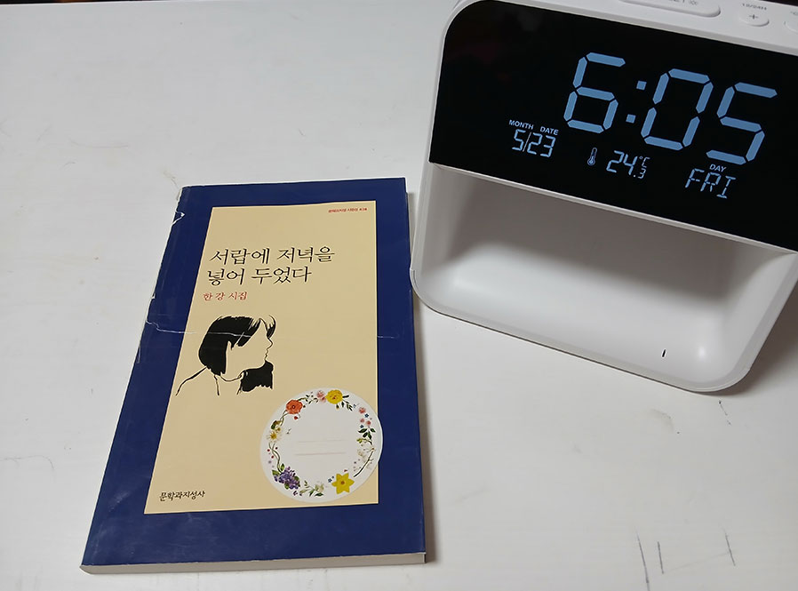
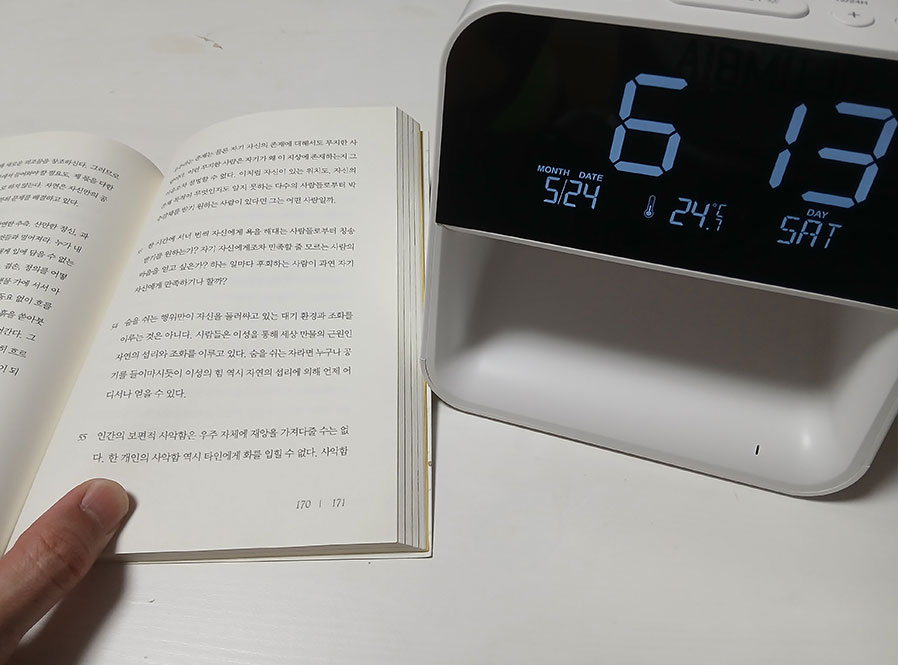
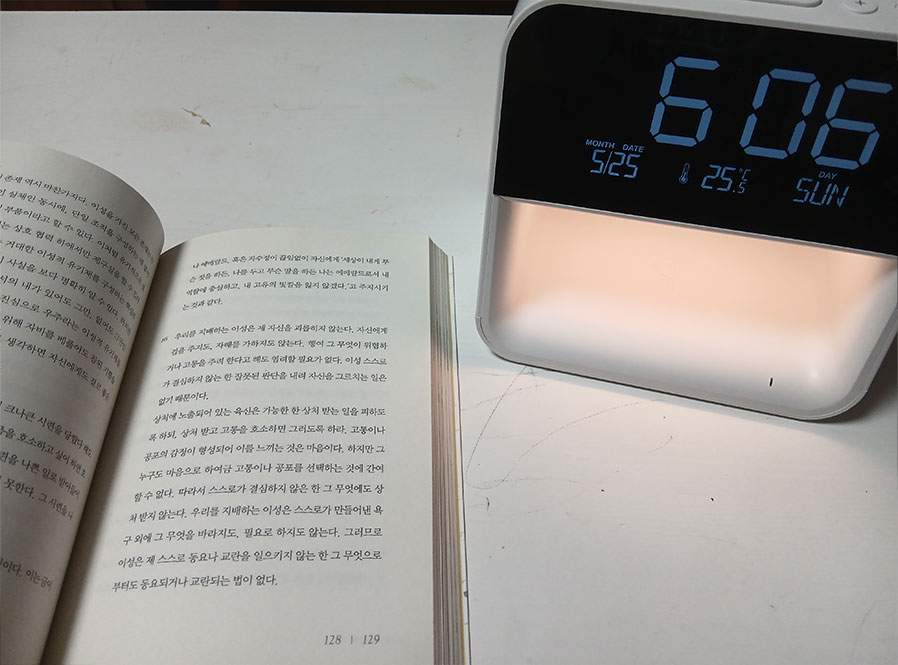
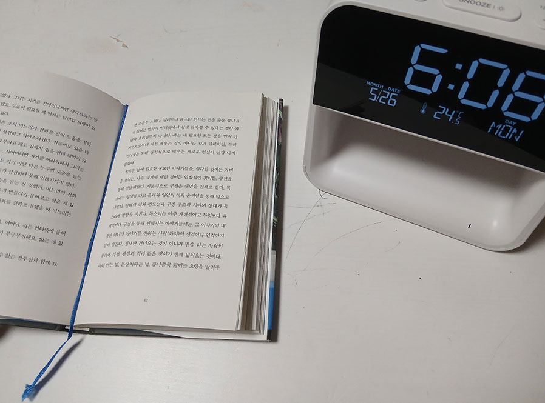
유통사업처 유통기획팀
이태경 사원
아침은 늘 급하게 일어나 출근 준비하느라 정신없이 보냈는데, 이번 미라클 모닝 챌린지를 계기로 나 자신을 위한 시간을 가져보기로 했습니다. 5일간 영어 라디오를 들으며 그동안 멀어졌던 영어와 다시 가까워지고, 시사 감각도 업그레이드할 수 있었습니다. 아침부터 꽉 차고 의미 있는 하루를 보낼 수 있는 좋은 경험이었습니다.


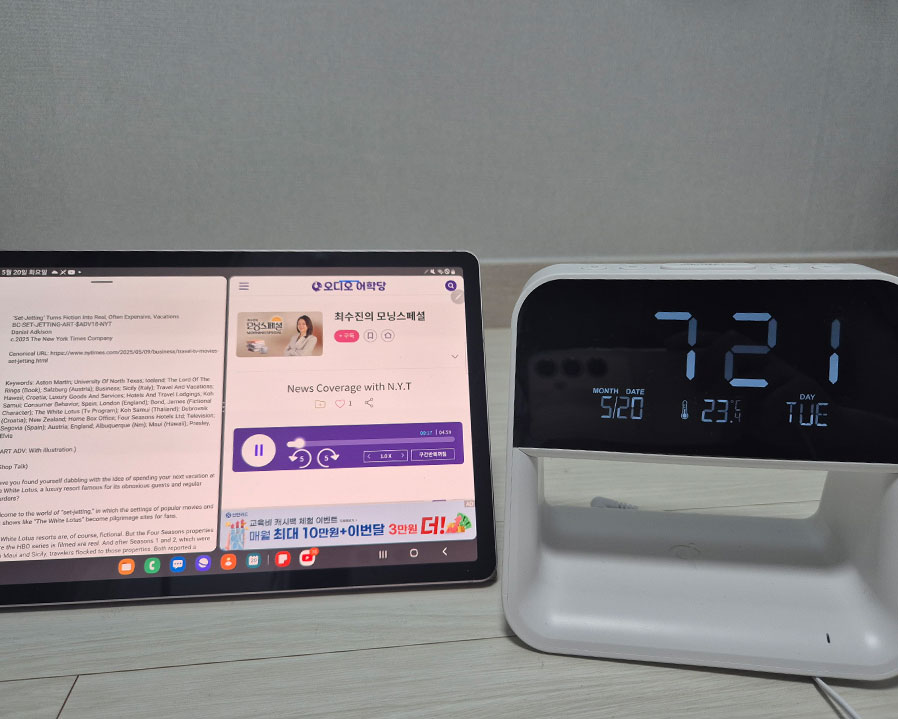
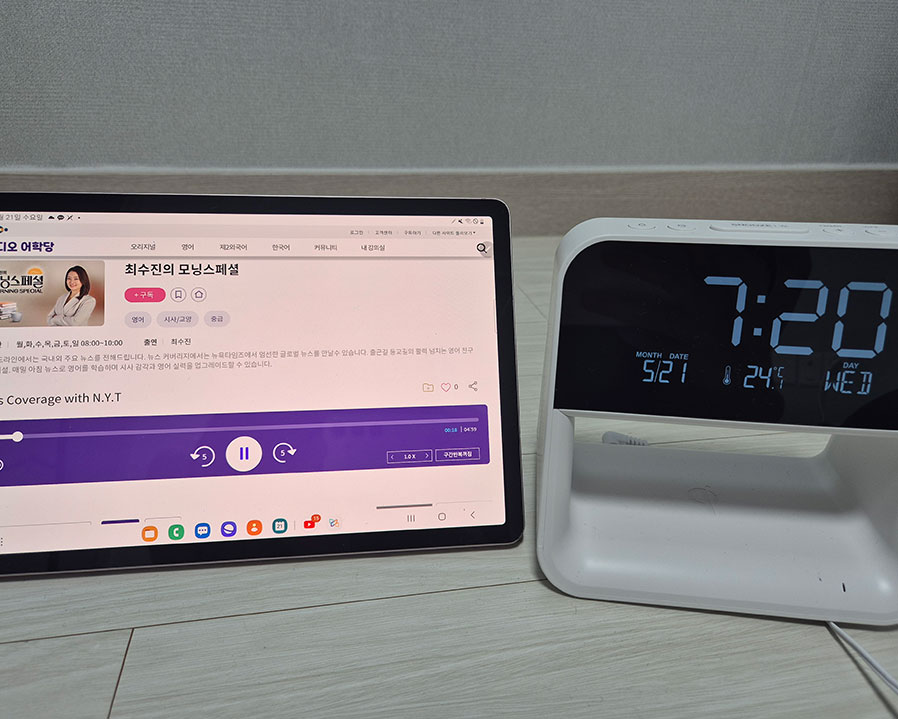
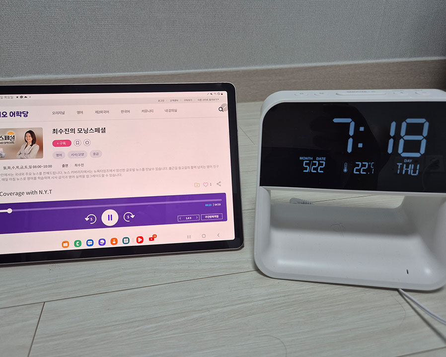
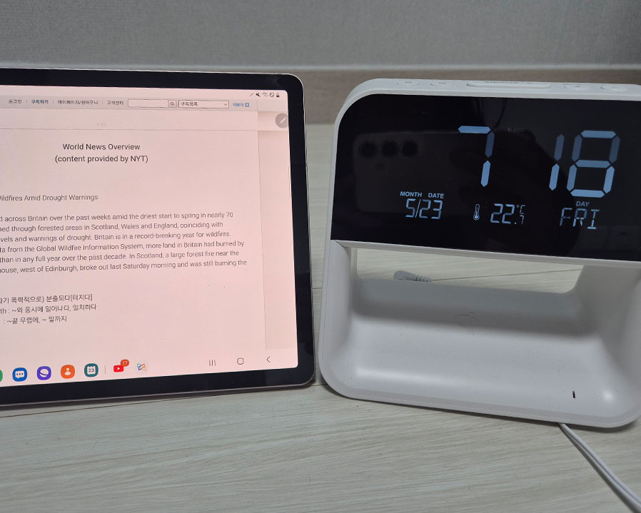
기획예산처 기획협력팀
이혜원 사원
아침에 15분 일찍 일어나서 이기주 작가의 『보편의 단어』를 읽었습니다. 평범한 단어들을 풀어놓은 글을 읽으며 차분하게 하루를 시작할 수 있었습니다. 사소하다면 사소한 한 가지 변화이지만, 긍정적인 에너지를 얻을 수 있는 좋은 경험이었습니다.


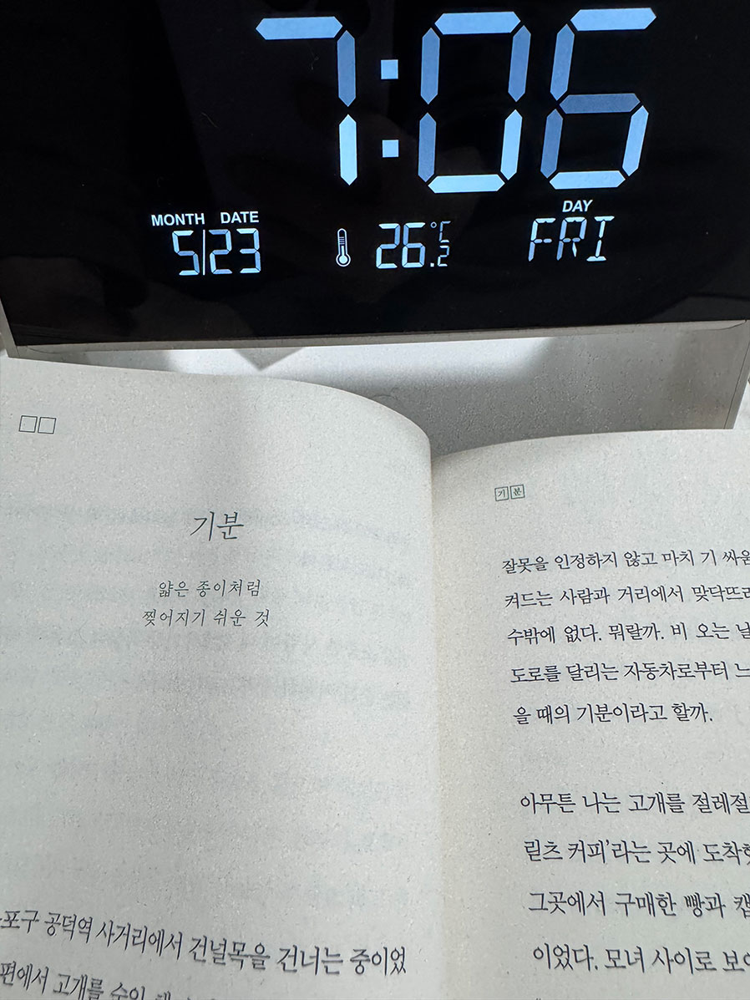
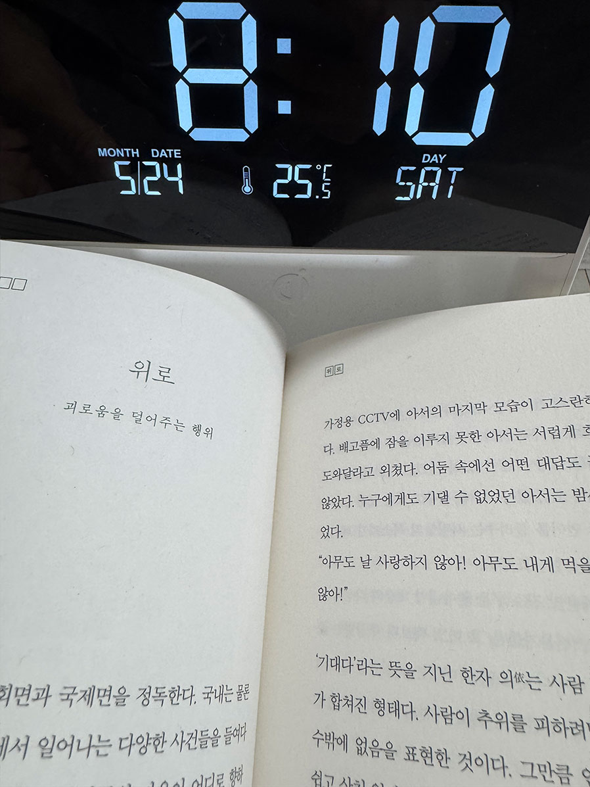
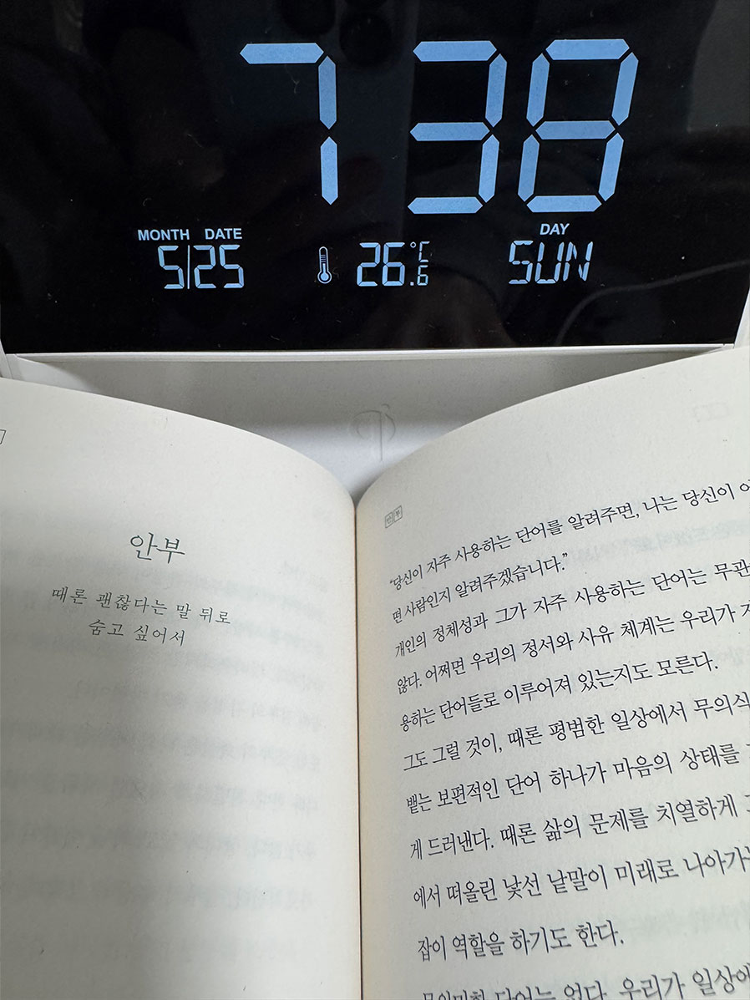
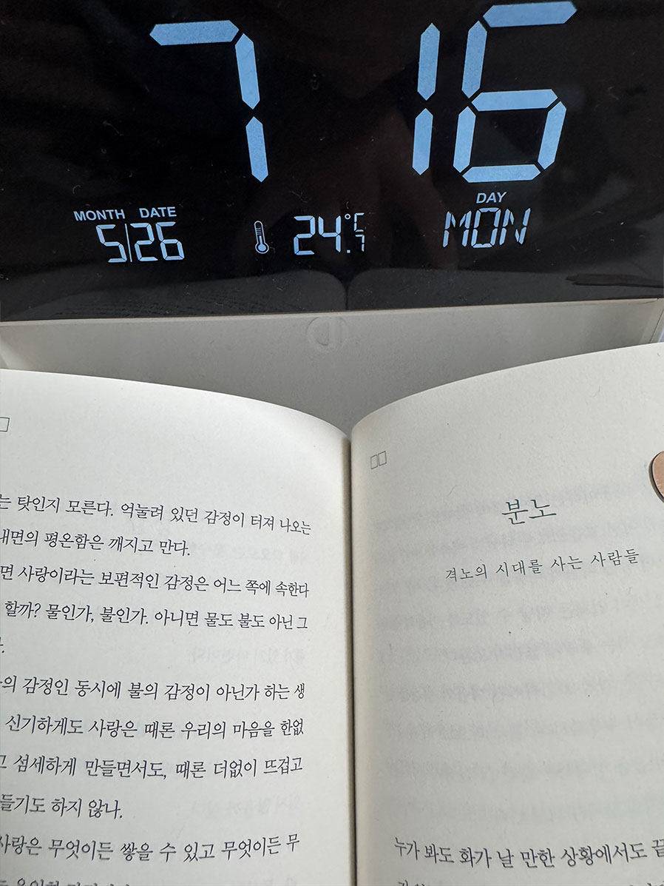
에너지인프라사업처 인프라개발팀
이승주 사원
미라클 모닝 챌린지 이전에도 일찍 일어나는 습관은 있었지만, 때때로 게을러지는 순간도 있었던 것 같습니다. 하지만 이번 챌린지를 통해 ‘운동’이라는 목표를 세우고, 기상 시간을 인증하다 보니 자연스럽게 목표 의식이 생겼고, 덕분에 5일 연속 아침 운동을 할 수 있었습니다. 챌린지 기간은 5일이었으나, 앞으로도 이 루틴을 꾸준히 이어가기 위해 더욱 노력해보겠습니다!


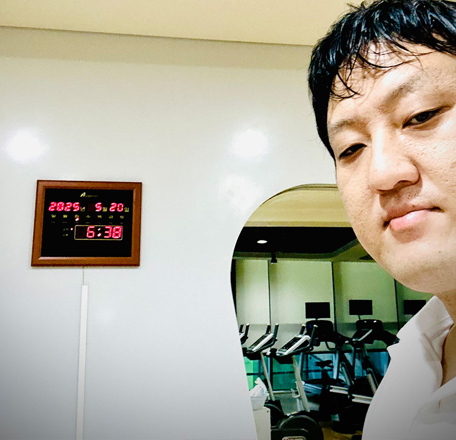
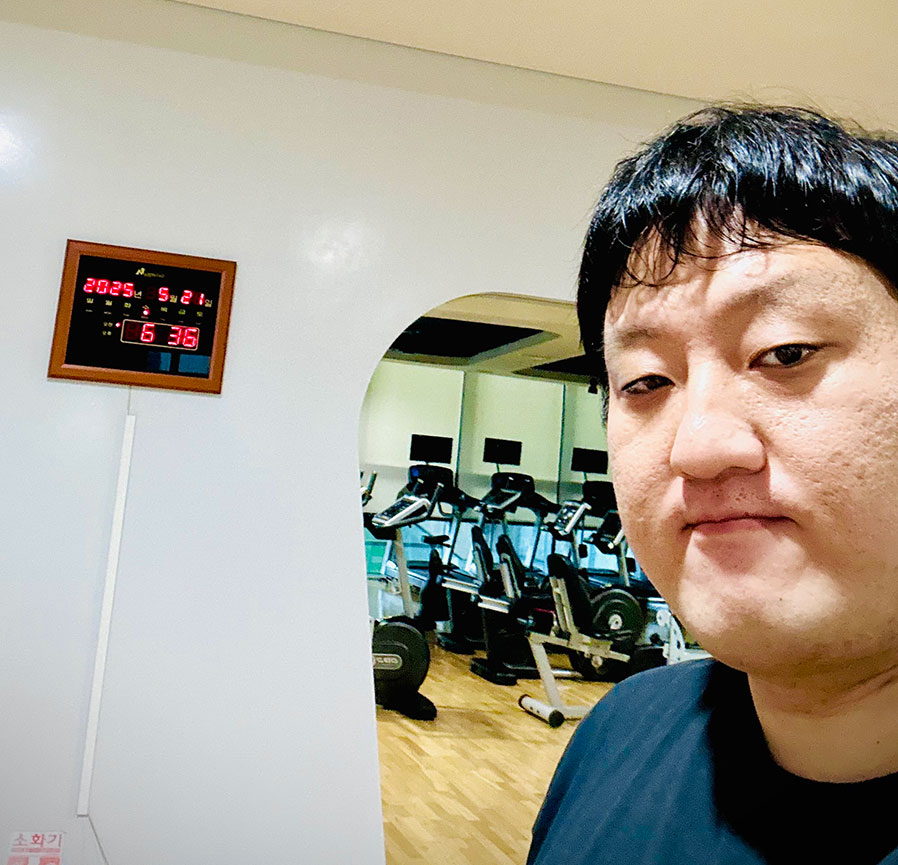
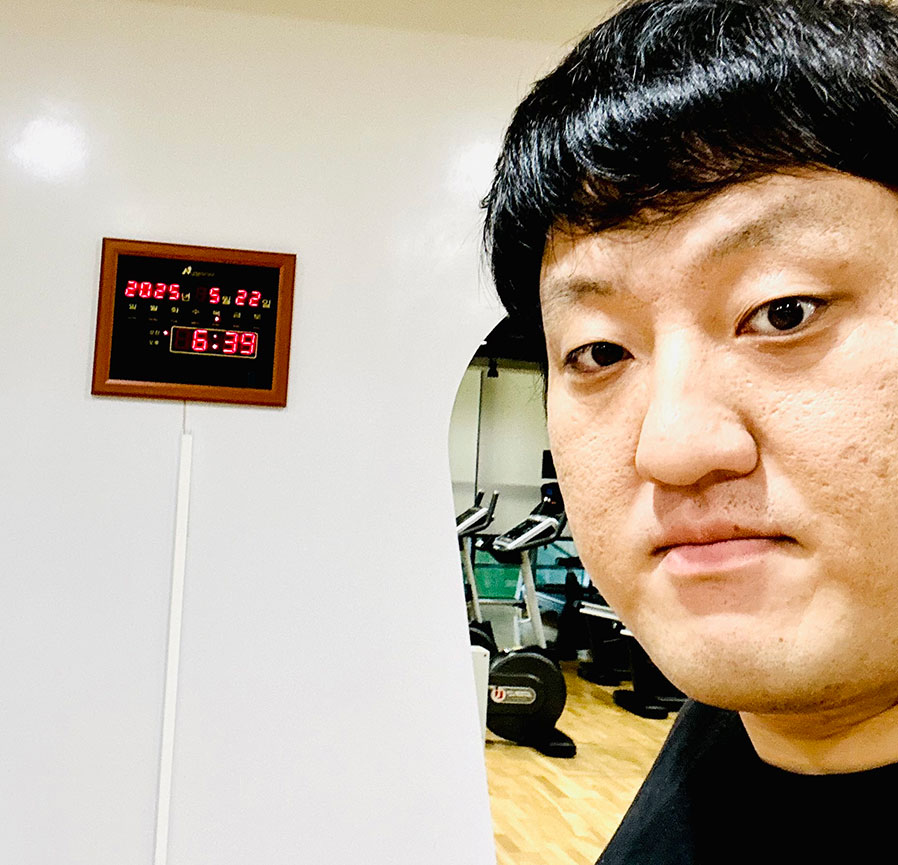